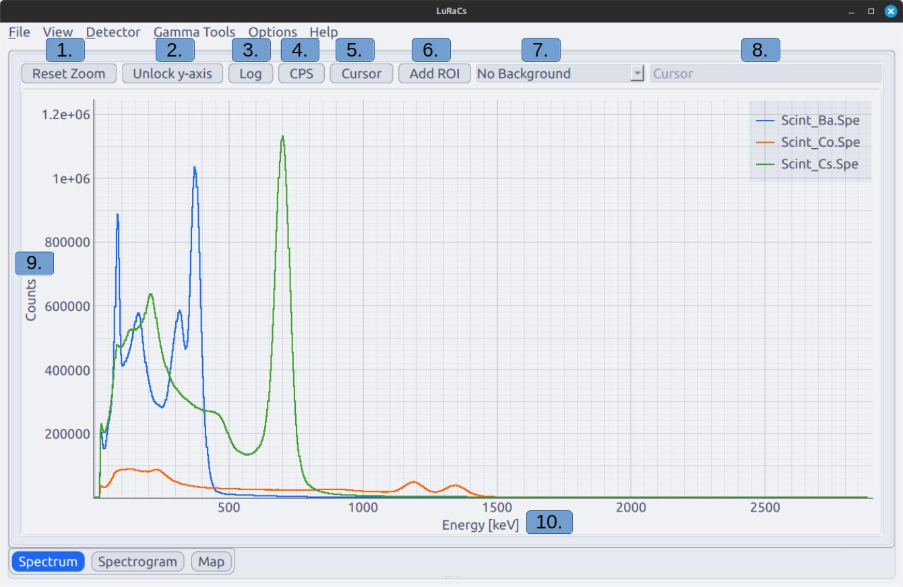
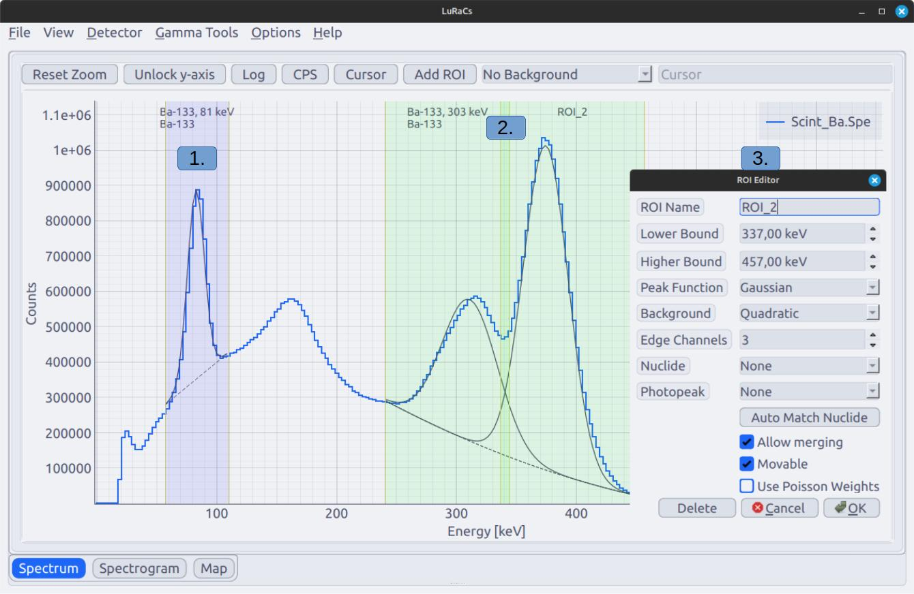
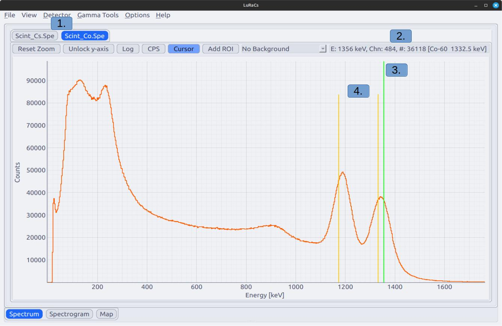
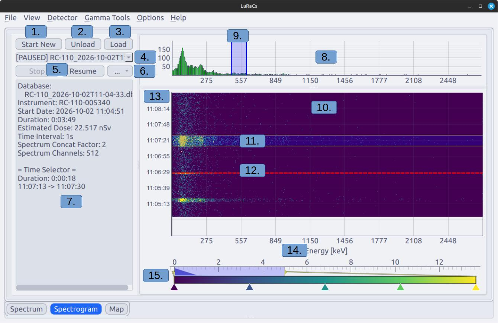
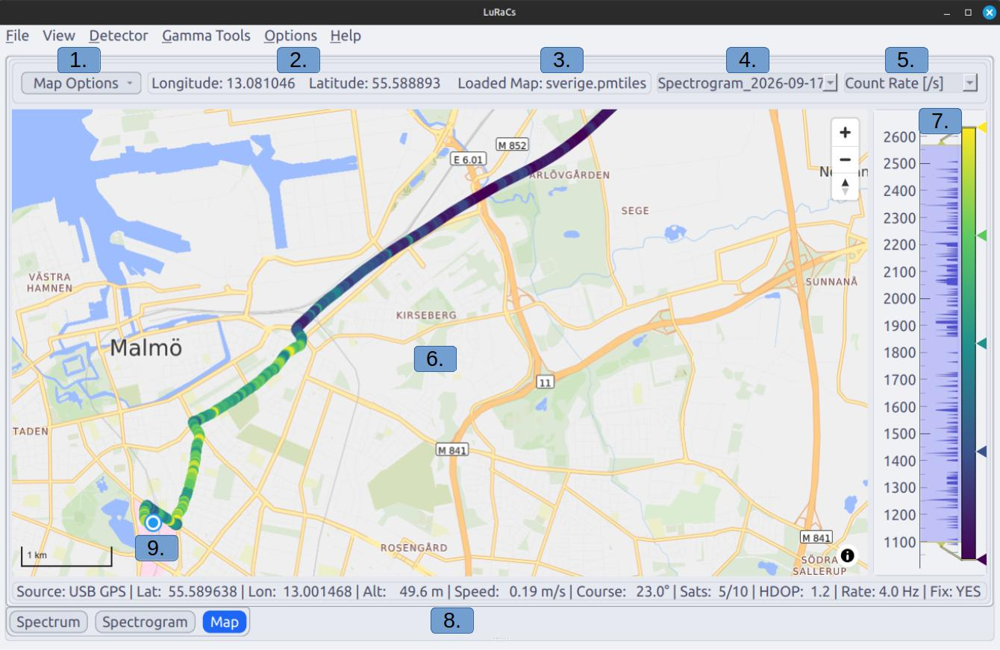
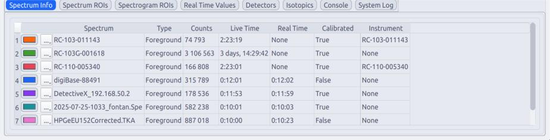
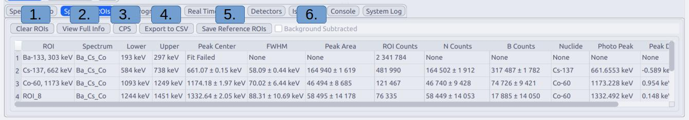
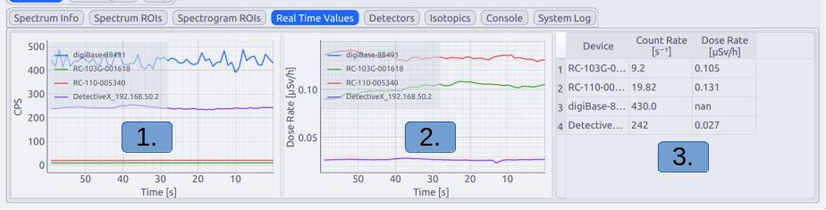
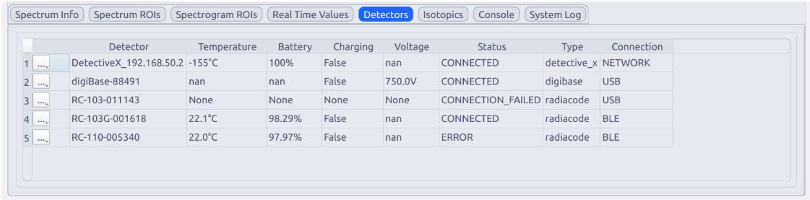
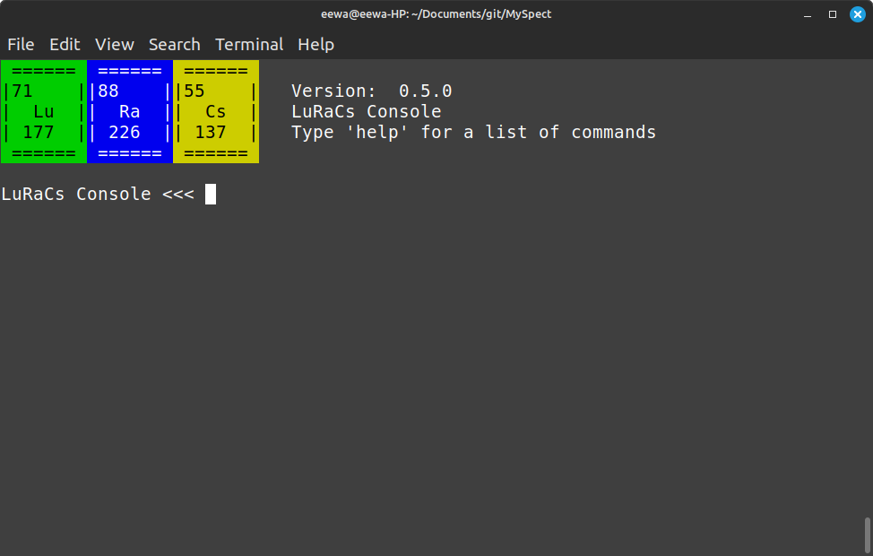

The spectrum view shows spectra as a count histograms, retrieved from a connected device or loaded from a file. It can show several spectra combined in one plot or separately. This can be changed under Options -> Tabbed-/Combined Spectrum View.
Background spectra can be viewed as one the three following methods No background, Background overlay and background subtract. Background overlay shows the background spectrum overlaid on top of the main spectrum. Background subtract does channel wise subtraction of the background from the foreground spectrum, this is a hard background subtraction and will effect ROI calculations on the spectrum. Both Background overlay and background subtract only show values of count rate.

Rest Zoom resets the zoom of the spectrum and locks the y-axis if unlocked.
Unlock y-axis allows the y-axis to be zoomed independently and disables autoscaling.
Log set the scale of the y-axis to logarithmic.
CPS normalises the spectrum to the live time, or real time if live time is not available but real time is.
Cursor toggles the spectrum cursor, see .
Add ROI adds a customisable region of interest to the spectrum, see .
Switch the use of background spectrum. Options are No background, Background overlay and background subtract. See the section above.
Display for info from the cursor, see .
The y-axis show either total counts or time normalised counts in units of .
The x-axis always display energy in units of keV.
Regions of interest (ROI) are sub regions of the spectrum bounded in energy and are useful in the analysis of spectrum peaks. Spectrum peaks can in most cases be approximated with a Gaussian function and knowing the function parameters to describe is useful for many analyses. LuRaCs provides a method for fitting Gaussian functions to peaks inside ROIs and do so by default. These fits are required by other tools in the application. However, ROIs can also be configured to not perform fits, in these cases only the total ROIs counts are calculated.

A ROI with one peak and a fitted Gaussian peak and linear background.
Two merged ROIs that fit two Gaussian peaks on a shared quadratic background.
The ROI editor for ’ROI_2’, see .
| Field | Description |
|---|---|
| ROI Name | An alias for the ROI used for display purposes and easier identification. |
| Lower Bound | The lower energy bound of the ROI. |
| Upper Bound | The upper energy bound of the ROI. |
| Peak Function | The type function fitted to the peak. Options are: Guassian, None |
| Background | Type of function used as peak background. Options are: None, Linear, Quadratic |
| Edge Channels | The number of channels inside of ROI from the upper and lower bounds of the ROI used to fit the background. |
| Nuclide | Assign a nuclide from the reference library to the ROI. Used for calculations by other tools. |
| Photopeak | Choose the specific photon emission associated with the peak in the ROI. Options are based on the chosen nuclide. |
| Auto Match Nuclide | Attempt to automatically find the Nuclide and Emission of the peak. If any nuclides are check and shown in the spectrum the match is limited to these. Blind matches are often unreliable. |
| Allow Merging | Allow the ROI to merge with other ROIs with merging allowed. |
| Movable | If the ROI can be moved by using the mouse. |
| Use Poission Weights | Apply a 1/σ weight to the optimisation to force the peak to emulate a Poission distribution. |

Tabs for selecting spectrum in Tabbed Spectrum View.
Information about the cursor, it shows position of the cursor in units of energy, corresponding channels number, the number of counts in the channel, closest reference emission line as [nuclide Emission Energy Decay chain if applicable]. Channel and channel counts are only displayed in tabbed spectrum view.
Cursor in the spectrum.
Emission lines of the suggested nuclide. These are always to closest to the cursor and does not weigh intensity or anything else. Can be disabled by View -> Spectrum -> Show Cursor Emissions.
A spectrogram allows time-series measurements to be conducted. A spectrogram stores data at specified time intervals and can be displayed in a waterfall plot. It is also the method LuRaCs uses for mobile measurements. If a GPS is connected the geolocation data provided is automatically stored in the spectrogram. These measurements can visualised on the embedded Map.

Opens a dialog for starting a new spectrogram.
Close the viewed spectrogram.
Shortcut to the Data Store Spectrogram page, see section 1.7.
Selector for currently loaded spectrograms. Status is shown to the left as [ACTIVE], [LOADED] or [PAUSED].
Pause or Resume data collections, requires that the same instrument used collect the previous data to be connected.
Options menu, see
Current information stored in the spectrogram and information about the Time Selector if active.
Count histogram. Shows either total accumulated spectrum upon loading a measured spectrogram, summed channel counts inside the Time Selector if active or counts in the latest row.
ROI illustrated in the histogram, can be deleted with Mouse-2.
Waterfall diagram of the spectrogram.
Time Selector to study a specific time interval. Can be toggled in the options menu (6.).
Break line, illustrates that the time between measured points exceeds the Time Interval. Can indicate a connection and caution should be taken to verify data integrity. Can be toggled in the options menu (6.).
Y-axis displays the timestamps of when each row was measured.
X-axis display spectrum energy if calibrated.
Color slider for the waterfall diagram. Color map can be changed by clicking Mouse-2 on the gradient bar.
The spectrogram format is based around an SQLite database, see section [sec:file_spectrogram] for further details on the format. The following data is stored for each time point in the spectrogram:
Timestamp.
Average count rate measured since the last time point.
Average dose rate measured since the last time point.
Device temperature at the time the data is written.
Longitude at the time the data is written, if a GPS is available.
Latitude at the time the data is written, if a GPS is available.
Spectrum difference since the last written data point, stored as compressed binary.
Meta data, stored as a utf-8 encoded and zlib compressed json-string. Examples of stored metadata include extended GPS data.
Loading a map enables viewing of geographic measurements made with a spectrogram and a GPS. Maps can be loaded from online API requiring an internet connection or loaded from a .pmtiles-file for offline use. Compatible APIs and files are offered by several vendors, the software QGis offers support for exporting .pmtiles from other formats using plugins.
LuRaCs does not provide or distribute map data. Users are responsible for ensuring that any map data or tile services they use with LuRaCs are obtained and used in accordance with the applicable licenses, terms, and usage restrictions.
The map is rendered using Qt’s web engine making it a powerful but heavy tool. Using offline maps can use a lot of system memory since the server needs to cache tiles for a smooth view. Use a system with enough memory for this method. However, both the map and datapoints are rendered using GPU acceleration with WebGL allowing for 10 000s of points to be displayed without excessive stress on the system.

Options menu for loading maps and importing and exporting simple tracks.
Longitude and Latitude of the cursor.
Name of the loaded map.
List of loaded spectrograms, if the selected contains no geolocation data no points are displayed.
Selector for what data is shown. total Count Rate, Dose Rate or count rate inside a loaded ROI.
Main map view.
Color gradient selector for the track points and a histogram over measured values. Color map can be changed by clicking Mouse-2 on the gradient bar.
Live data from the GPS, see
Current GPS position, always displayed as a white and blue circle.
Displays information spectra loaded spectra.

XML or N42 file extensions are kept in the name.| Column | Description |
|---|---|
| Column 0 | Color button allowing for changing the color of a spectrum. Options button marked with ’...’, see . |
| Spectrum | The name of the spectrum. |
| Type | Foreground or Background, these share the same name in the ’Spectrum’-column for the same spectrum. |
| Live Time | The live time of the measurement, accounting for dead time. |
| Real Time | The real time of the measurement. |
| Calibrated | True or False, if an energy calibration is detected and applied. |
| Instrument | Which instrument is assigned to the spectrum, see section 1.7 |

Clear all loaded ROIs from all spectra.
Debug view of all data contained in the loaded ROIs.
Apply time normalisation to the calculated ROI data.
Export the calculated data and the live of each ROI to a CSV-file.
Save ROI references to the data store for later access. These save the settings of the ROI but not the data.
Icon to display if the spectrum is background subtracted since this effects the results of ROI calculations.
Plots the values sampled for a detector in real time. Not all detectors provide both Count Rate and Dose Rate, in these cases the detector is still registered to the plot but noting is shown. Y-axes can be made logarithmic by right clicking the axis Plot Options -> Transforms -> Log Y.

Count Rate plot.
Dose Rate plot, y-axis is always .
Latest values sampled from the corresponding detector.
Information and status of connected detectors are displayed in this tab.

LuRaCs provides a library of data for a selection of common radionuclides and can be viewed in this tab. These can be used to draw reference lines for emissions in the spectrum plot. Most of the nuclide data is sourced from Laboratoire National Henri Becquerel, a few nuclides not provided by LNHB had be sourced from elsewhere. A citation is provided for each nuclide and full references can be found under Help -> Bibliography.
The console allows for entering text commands to control the application and running scripts for basic automation. See for information on available commands and their usage.
The Console can be used for light automation by using the exec command and providing a file path. The file is executed line by line and can used to quickly start set up a measurement session.
The System Log displays messages from the application and detector clients. If something crashes the error and traceback will be displayed here.
Interaction with LuRaCs is done primarily through the GUI but it also provides a terminal based command line interface, allowing for detector control without a GUI. This can be useful for remote measurements or measurements run on a Raspberry Pi attached to a drone. This mode shares most of the same commands as the GUI Console with the exception of visualisation tools.
This mode is started by running LuRaCs in a terminal with the –headless flag.

The settings are devided into Settings which contain basic and cosmetic settings, such as what data should be imported files and what theme should the application use.